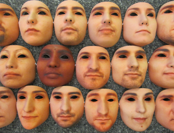

Tutorial TABULA RASA (BTAS’13)



Slides available <HERE>
Publications by the instructor on spoofing/anti-spoofing <HERE>
Publications by the instructor <HERE>
Abstract
This BTAS tutorial will present the main research outcome of the TABULA RASA project. TABULA RASA (Trusted Biometrics under Spoofing Attacks) is a European funded project (7th Framework Program) that is addressing some of the issues of direct (spoofing) attacks to trusted biometric systems. This is an issue that needs to be addressed urgently because it has recently been shown that conventional biometric techniques, such as fingerprints and face, are vulnerable to direct (spoofing) attacks.
Direct attacks are performed by falsifying the biometric trait and then presenting this falsified information to the biometric system, one such example is to fool a fingerprint system by copying the fingerprint of another person and creating an artificial or gummy finger which can then be presented to the biometric system to falsely gain access. This issue effects not only companies in the high security field but also emerging small and medium sized enterprises (SMEs) that wish to sell biometric technologies in emerging fields.
Program:
-
• Introduction
-
• Methodology for the evaluation of vulnerabilities to spoofing attacks
-
• Vulnerability to spoofing attacks (2D face, 3D face, Near Infrared, iris, fingerprint, voice, ...)
-
• Anti-spoofing (aka Presentation Attack Detection !)
-
• Lessons learned from the Anti-Spoofing Competitions
-
• Lessons learned from the ICB Spoofing Challenge
-
• Conclusion and Future work
Required prior knowledge:
No specific knowledge needed besides general understanding of biometrics technologies
Instructor
Sébastien Marcel received the Ph.D. degree in signal processing from Université de Rennes I in France (2000) at CNET, the research center of France Telecom (now Orange Labs). He is currently interested in pattern recognition and machine learning with a focus on biometrics.
He is a senior researcher at the Idiap Research Institute (CH), where he heads a research team and conducts research on face recognition, speaker recognition and spoofing attacks detection.
In 2010, he was appointed Visiting Associate Professor at the University of Cagliari (IT) where he taught a series of lectures in face recognition.
He is also lecturer at the Ecole Polytechnique Fédérale de Lausanne (EPFL) where he is teaching on “Fundamentals in Statistical Pattern Recognition”. He serves on the Program Committee of several scientific journals and international conferences in pattern recognition and computer vision.
Finally he is the principal investigator of international research projects including MOBIO (EU FP7 Mobile Biometry), TABULA RASA (EU FP7 Trusted Biometrics under Spoofing Attacks) and BEAT (EU FP7 Biometrics Evaluation and Testing).
Publications by the instructor on spoofing/anti-spoofing <HERE>
Publications by the instructor <HERE>
Spoofing and Anti-Spoofing in Biometrics: lessons learned from the TABULA RASA project